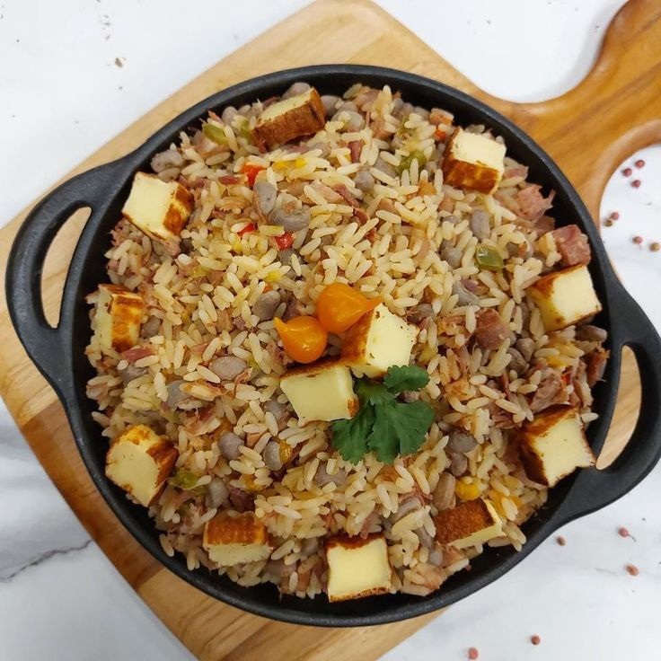

Baião de Dois
O Baião de Dois é um prato típico do Nordeste e Leste brasileiro, feito com arroz e feijão verde ou feijão-de-corda, temperado com queijo coalho, bacon, linguiça e ervas. Uma combinação cremosa e saborosa que representa a culinária regional.

Ingredientes
Serve 4 a 6 porções
- 1 xícara de feijão verde ou feijão-de-corda cozido
- 2 xícaras de arroz
- 100 g de bacon picado
- 1 linguiça calabresa cortada em cubos
- 1 cebola média picada
- 2 dentes de alho picados
- 1 xícara de queijo coalho em cubos
- Cheiro-verde a gosto
- Sal e pimenta-do-reino a gosto
- Óleo ou manteiga para refogar
Modo de Preparo
Tempo estimado: 45 minutos
- Em uma panela, aqueça o óleo ou manteiga e refogue o bacon, a linguiça, a cebola e o alho até dourarem.
- Adicione o arroz e refogue por alguns minutos.
- Acrescente o feijão cozido com um pouco de água do cozimento, misture bem e ajuste o sal e pimenta.
- Cozinhe em fogo baixo até o arroz ficar macio e o prato cremoso.
- Finalize com queijo coalho e cheiro-verde antes de servir.
Dica do Chef: Para um Baião de Dois ainda mais saboroso, utilize feijão fresco e não deixe de dourar bem o bacon e a linguiça. O queijo coalho pode ser grelhado antes de adicionar ao prato para intensificar o sabor.